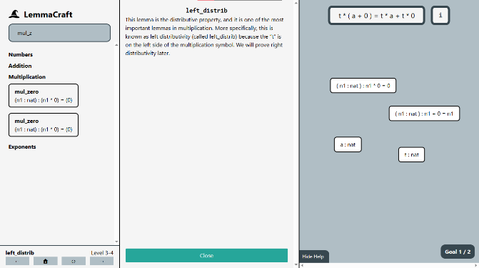

LemmaCraft is a visual math proof engine with a custom parser and internal mathematical model. It allows its users to derive Peano-arithmetic results from only a few axioms. It consists of four chapters designed to teach users the software and introduce key lemmas: a tutorial chapter followed by three chapters that each cover a new mathematical domain: addition, multiplication, and exponentiation. In each chapter, players prove progressively more challenging lemmas about basic operations.

LemmaCraft takes influence from the Natural Number Game. The Natural Number Game is a text-based game built on the math proof language Lean. LemmaCraft takes the level design and philosophy of the Natural Number Game and reimagines the user interface to emphasize approachability and intuition. As an example, to make a certain change in the Natural Number Game, a user might type out a lengthy command; to make the equivalent change in LemmaCraft, they would drag and drop statements to combine and rewrite them.
To prove a lemma in both Lean and in LemmaCraft, the lemma is set to be the initial goal and the objective is to make both sides of the mutable goal’s equality the same. There are also a number of hypotheses which are known to be true and are used to manipulate the goal. To make changes to the goal, the user uses various commands or tactics. For example, one such command is the rewrite command, with which one of the hypotheses is used to replace a part of the goal with an equivalent statement, thus simplifying the goal.
This is translated into LemmaCraft visually; instead of typing out a rewrite command as one does in Lean, one must drag a block that represents a hypothesis onto the goal. Similar adaptations are made for other commands; for example the reflection command, which solves goals that have both sides matching, is performed by double-clicking on the goal. While this does make LemmaCraft a more difficult starting point for someone wanting to learn the Lean programming language, it is more approachable for someone wanting to learn the philosophy behind formalized math proofs without learning the syntax of software like Lean.
LemmaCraft reimplements math logic without depending on external math programs such as Lean. This is done for several reasons, primarily for control over the internals of the engine and for a simplified hosting and development environment.
The system was engineered for extensibility and modularity; ease of adding new commands is the primary architecture principle. Every new command has three parts: changing the UI to include an input for the command, reacting to the user input on the global or level scope, and changing individual statements’ content. Thus, the architecture is split into three levels of abstraction: the user interface, the level script, and the math object or MObject class. The user interface serves as the input for the user and communicates the current state of the proof visually. The level script serves as the level manager: it reacts to user input, stores the current state of the proof, and manages each math object. The math object class parses and manipulates math statements. The goal and all of the hypotheses are stored as math objects.
The user interface is generated from a template with a generator script. All of the level data resides in a JSON file, and after making changes to it or the template file, a simple script is run to replace parts of the template with each level’s specific information.
The level script maintains the state of the program and reacts to user input. It stores all of the level’s state data in a list of windows. Each window captures the state of one goal’s context. Currently, induction is the only tactic which creates multiple goals. Each window includes a goal and a list of hypotheses, all of which are math statements stored as MObjects. When a user presses a keyboard shortcut or interacts with a UI element, the level script takes the appropriate action, either by passing on a change to one of the MObject’s methods or by changing the state of one of the windows.
The MObject class maintains individual math statements and stores statement information recursively in a binary tree. The MObject is a syntactic tree, not semantic: there is minimal type-checking and the math statements are stored as strings. Each MObject stores the following information:
x bound would have a math representation like this: ∀x∈ℕ,x+0=x. Storing chunks with a name-based identity rather than α-equivalence massively simplifies implementation, but limits some expressiveness in level design and restricts users from naming variables themselves. The alternative approach, which would be necessary if building a general proof language, would be to tag each variable with a unique identification, thus allowing for distinct variables to share a name. A name-based identity is sufficient for Peano-level mathematics because the complexity is limited and users cannot name variables themselves. Thus, the variable names can be controlled such that there will never be duplicate names that represent different variables.
Math objects have three abilities or “tactics” that are used to manipulate statements and solve goals:
reflections, rewrites, and inductions. These tactics form the core logic of the system. Reflections are
performed by double-clicking on the goal. If both sides of the equal sign are the same then the goal is
solved; if that was the final goal for the lemma then the reflection concludes the proof. Rewrites are
performed by dragging a hypothesis onto the goal or another hypothesis. The hypothesis is of the form
a=b, where a and b are expressions shown to be equivalent. In the target statement, all instances
of the expression a are replaced with b. This serves as the primary way to simplify goals.
MObjects have two primary forms: type declarations and expressions. Type declarations are of the form a : nat, which reads, “a is a natural number.” Currently the only
supported type is natural numbers. Type
declarations can also include expressions; for instance 2 + 3 : nat is a valid type declaration and
reads “the sum of two and three is a natural number.” Expressions encompass everything that is not a
type declaration. Equalities are the primary example of expressions found in this game.
LemmaCraft is syntactic rather than semantic; MObjects are parsed using chunk list representations and
structural equivalence only. The engine does not perform automatic commutative and associative rewrites
and statements such as ( a + b ) + c must be rewritten manually into statements such as a + ( c + b).
Variable identity is name-based (no α-equivalence), so levels and lemmas must avoid variable-name
collisions. These constraints simplify development but restrict custom lemma solving and require care in
level designing.
The parsing engine converts raw text into usable chunks organized in a binary tree. It identifies the top-most symbol and recursively splits and parses the remainder of the statement into left and right sides.
Raw string containing the math statement to be parsed. The string’s symbols must be space-separated and
parenthesis-precice so that they can be distinguished from one another. For example, a+b=b+a+0 would
be written as ( a + b ) = ( ( b + a ) + 0 ). This parenthesized form is the canonical representation
used for parsing.
If a statement involves a universal quantifier, the raw string is prefaced with a variable list and a colon.
For example, the canonical representation of ∀x,y∈ℕ,x+y≥x is ( x y : nat ) : ( ( x + y ) ≥ x ).
Parsed math object.
The first step in the parsing algorithm is to convert the canonical representation string into lexed chunks. The chunk-list is made by splitting the canonical representation at every space and around every symbol.
Then, redundant parentheses are removed. Parenthesis are redundant if they can be removed without affecting the meaning or specificity of the equation. A set of parentheses is redundant in exactly two cases: there is exactly one chunk between them, or they directly enclose another set of parentheses such that there is a double parenthesis around the same expression. These scenarios are the only scenarios when parenthesis can be removed without changing the underlying structure of the equation. The list of chunks is stored as a property of the MObject.
Variables are bound by ( x y z : nat ) : preceding the statement. These variables are substitutable for
any natural number, the equivalent of the universal quantifier (∀). The next step of the process is
identifying which variables are bound. Because this project only deals with natural numbers, it is not
necessary to identify their type, nat. This is done by basic search-string pattern identification.
After doing this the variable-bounding part of the statement is removed from the chunk list.
This step involves finding the top-level symbol, which is the symbol that is evaluated last in the statement.
For example, in the equation a * b + (c + d), there are three symbols: one multiplication sign and two
plus signs. The first + sign is the top-level symbol because it is evaluated after the * sign, due
to order of operations, and after the second +, due to parenthesis. Thus, a symbol cannot be the
top-level symbol if it is within a pair of parenthesis or if there is a higher symbol at its level. In
an equation, the top-level symbol is the equal sign.
To find the top-level symbol, the chunks are scanned from left to right, and the right-most symbol of the highest rank is identified. Chunks within a pair of parentheses are skipped. After identifying the top-level symbol, this symbol is set to be a property of the MObject.
If a top-level symbol can be identified, the final step is to identify a “left” and “right” side of the
equation. While there are some symbols where this is more complex, e.g. the negation sign, negative
sign, or a function declaration f(x), all of the symbols currently implemented are of the same
format: The “left” side is the entire statement to the left of the symbol, and the “right” side is the
entire statement to the right of the symbol. After identifying the left and right sides, the sides are
parsed into new MObjects, thus creating a recursive binary-tree structure of the MObject.
The rewrite engine is used when a part of a statement is substituted for something mathematically equivalent.
For example, the statement a + b = c can be rewritten using the statement b = d into a + d = c,
given that the first two equations are known to be valid.
A parsed math object that serves as the target MObject for the rewrite, and a parsed math object that serves as the reference MObject. The target MObject can be any valid math statement, but the reference must be an equality or a type declaration.
If the reference MObject is an equality, then the target MObject will undergo a substitution, like the above
example in which d is substituted for b. If the reference is a type declaration, then the target
MObject will unbind one of its variables; for example, with the target math object ( x : nat ) : x + 0 = x,
if the reference math object is the type declaration a : nat, the resultant equation is a + 0 = a.
The updated target math object.
If the reference MObject is a type statement, then the rewrite acts as a variable unbounding. The engine
first checks if the reference MObject ends with : nat. If the reference MObject ends with these chunks
and the target MObject has bound variables, then the unbounding can proceed. To unbound a variable, the
replacement expression is identified by removing the : nat from the target MObject. Then, all
instances of the first bound variable in the target MObject are replaced with this expression and the
variable is removed from the variable list.
If the reference MObject is not a type statement, then it must be an equality in order to perform a rewrite. Thus, the rewrite can only proceed if the top-level symbol of the reference MObject is an equal sign. After checking this symbol, the find_first_match algorithm in Appendix I is run to find a match, using the left side of the reference MObject as the search expression. The algorithm returns a list of chunks to replace and a variable list of which variables are being unbounded. It works by creating a parenthesis-group representation of the target MObject as noted below and recursively analyzing it until the search expression has been found.
If a match is not found, then the rewrite is terminated and reattempted with the left and right sides of the equation swapped. If the sides have already been swapped then the rewrite has failed.
Parenthesis-groups are a structure created when looking for a match. They arise from two key insights:
The match must be found exactly between a pair of parenthesis because otherwise rewriting may violate the
order of operations or take a part of an expression out of context. Consider the expression a+b*d. If
we are searching for a+b and want to replace it with c, then avoiding this rule would invalidly
result in c*d. If we instead rewrite the expression as a+(b*d), then it becomes obvious that the rewrite
does not make sense. Thus, it is only correct to rewrite a statement if it is parenthesis-bound.
The parenthesis-group structure is a list of nodes in a tree of maximal parenthesis-enclosed substrings, recursively separating different groups of parenthesis. When building the structure, each chunk in the MObject is looped through and a node is made for each chunk. Each node has two properties: type and chunk_list. There are three possible types: variable, symbol, and parenthesis. If the chunk is enclosed in a pair of parentheses, then it is of type parentheses. If it matches one of the bound variables in the MObject’s variable list, then it is of type variable. Otherwise, it is of type symbol. All of the chunks within a pair of parentheses form the same node and are stored in the object’s chunk_list.
If a match of the reference MObject’s search expression has been found in the target MObject, then the replacement is prepared for substitution. Recall that the replacement is typically the right side of the equal sign on the reference MObject. To prepare the replacement, the bound variables in the replacement are replaced with their corresponding substitution found in the variable-substitution list created from the match.
The final step is to make the substitution. This is done by scanning the target MObject for the found match and replacing it with the replacement. The leftmost occurrence of the found match is used for the replacement. After making the substitution, the target MObject is replaced.
The level generation script converts a JSON file with the game data into twenty-six levels using an HTML template.
The HTML template contains placeholders in the format {{ placeholderName }}. The template contains the
entire user interface in each level.
The JSON file is organized as follows:
The level generator script uses the JSON to fill in the HTML templates.
This section works through proving the statement ∀n,0+n=n using LemmaCraft. This is the lemma proved in
level 1-5 of the campaign.
First, the statement is converted into LemmaCraft’s input format: ( n : nat ) : ( 0 + n ) = ( n ). This
string is what is found in the JSON file used later for the template. This statement is parsed and set as
the goal. The parser then recognizes the bound variable and converts it into a hypothesis; we now have
the hypothesis n : nat and the goal 0 + n = n. Now, the user must prove the lemma.
First, the user drags the n : nat hypothesis onto the induction button. The induction causes two goals to
be formed: 0 + 0 = 0 and 0 + succ h = succ h. Two hypotheses have also been added for the second
goal: h : nat and 0 + h = h. Note that succ h reads “the successor of h.”
To prove the first goal, 0 + 0 = 0, the axiom “add_zero” of the form (n : nat) : n + 0 = n, is
introduced by clicking on it in the axiom panel. This creates the hypothesis (n : nat) : n + 0 = n.
By dragging the hypothesis onto the goal, the goal is rewritten. n is implied to represent 0 and the
goal is thus rewritten to be 0 = 0, which is solvable by double-clicking on the goal to perform a
reflection. The reflection verifies that both sides of the equation are equal; because 0 is the same
as 0, the first goal is successfully proven and only the second remains.
To prove the second goal, 0 + succ h = succ h, the axiom “add_succ” of the form (m n : nat) : m + succ n
= succ ( m + n ) is introduced by clicking it in the axiom panel. This creates the hypothesis of the
axiom. By dragging the hypothesis onto the goal, the goal is rewritten. m is implied to represent 0,
and n is implied to represent h. This rewrite causes the goal to become succ ( 0 + h ) = succ h.
By dragging the second hypothesis introduced during the induction, 0 + h = h, onto the goal, the goal
can be rewritten into succ ( h ) = succ h and parsed into succ h = succ h. Double-clicking the
goal to perform a reflection solves this goal. Because this was the last goal, the lemma proof is
completed.
Here is a video demonstration of this process:
[ VIDEO ]
LemmaCraft was an attempt at creating a proof engine that is entirely graphical. Unlike Lean, which relies on programming, LemmaCraft was able to create a proof of concept that graphical proof solving was not only possible, but capable of offering an intuitively satisfying and strongly motivating user experience. The graphical interface of the program is easier and more approachable for users unfamiliar with math proof concepts.
LemmaCraft currently faces several restrictions: firstly, due to the name-based variable bounding system, renaming variables must be done carefully: user interactions cannot create distinct variables with the same name and users cannot create custom lemmas to solve due to the inability of the current system to verify valid syntax.
Further development is possible should there be interest in more levels or a more satisfying experience. Here are a few areas candidate for expansion:
New chapters would involve new abilities and would explore a less concrete mathematical space. It would
expand beyond just natural numbers and deal with new abstract types. New abilities inspired from Lean
and the Natural Number Game such as intro, cases, and apply would be introduced in new chapters.
Solving long equations that primarily rely on the associative and commutative property is a tedious task. The
tactic simp from the Natural Number Game was able to solve most equations of this form and is a likely
candidate for future expansion.
Replacing the name-based variable identification with an ID-based system would allow users to rename variables. Another area that can be expanded upon is the parsing system in general; instead of storing everything as a string, parsing into a semantic representation would enable more types of expressions, enable strict syntax checking, and would allow for custom lemmas by the user.
Adding animations and other polish would make the game feel more responsive and satisfying to use. Currently the only significant example of this is the confetti after each level is solved. Examples to add include a bounce when a lemma is rewritten and a glimmer when a goal is solvable.
Let me know if you liked this article or want to see more content in LemmaCraft! Follow and message me on X!
Follow @x
This function references check_match, which is defined in section 5.1.2.
check_match is run during the find_first_match algorithm. It compares two MObjects as it checks for a
match, and it returns a variable-substitution mapping if a match is successfully found. The algorithm is
used on parenthesis-enclosed search expressions. The match must be found exactly between a pair of
parenthesis, as explained in the 3.2 subsection “Parenthesis-Groups.” Thus, the length of the two must
be the exact same. Pattern variables are bound variables in the search expression that can stand for
anything in the search expression; they can match with any chunk or expression in the target expression.